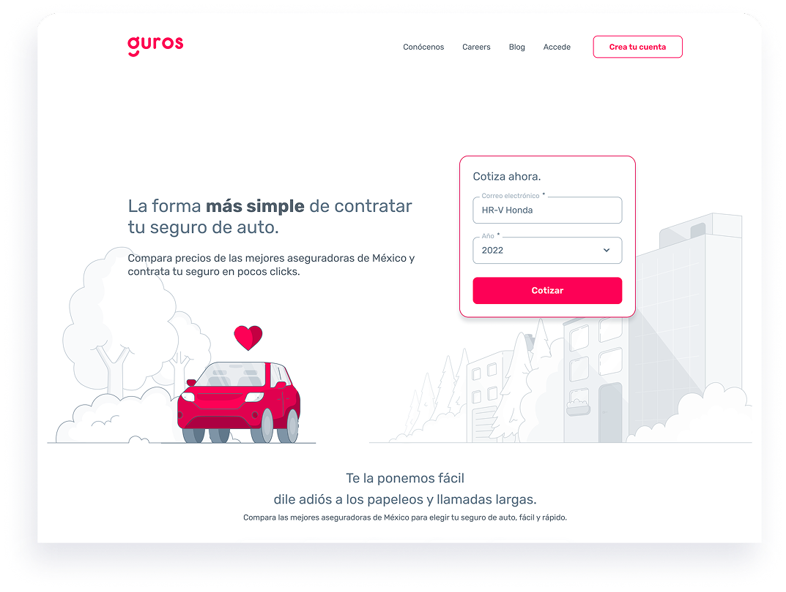
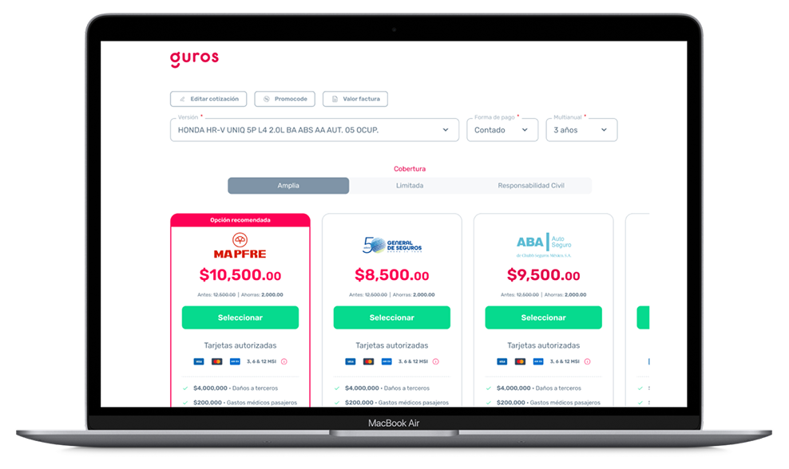
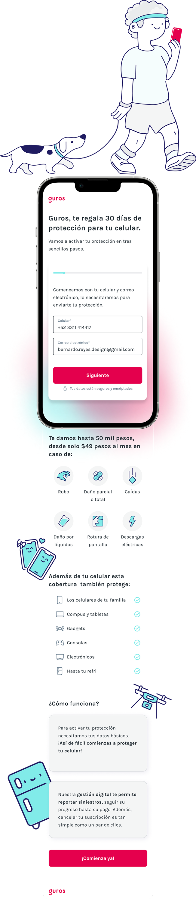
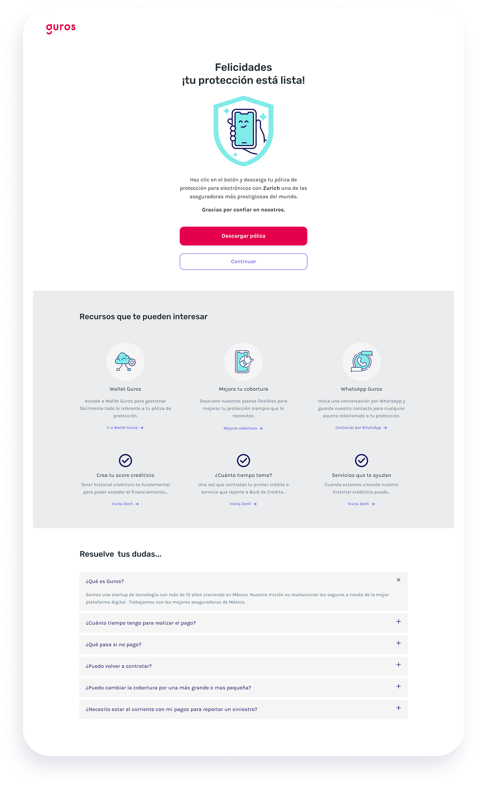

Redesigning car insurance so people actually trust what they're buying
End to end redesign of the quote to purchase flow for Mexico's leading car insurance marketplace, lifting conversion 18% by replacing confusion with confidence.
Role: Senior Product Designer · Stack: Figma + HotJar + LogRocket + Usability Testing · Team: squad of 2 designers, 3 engineers, 1 PM (design org of 4 designers, 12+ engineers)

Users weren't buying, not because the product was broken, but because they didn't trust it
Guros was a digital car insurance marketplace where users could compare policies from multiple providers. The quoter worked. The results showed up. But users were dropping before completing a quote, and those who did finish rarely felt confident enough to buy.
The cheapest option wasn't winning by merit. It was winning by default: users didn't understand what coverage differences actually meant for them, so they picked the lowest number and hoped for the best. Or they left.
No guidance · Jargon heavy results · Confidence gap at decision point
decision support
The data pointed to distrust, not friction
Before redesigning anything, I needed to understand where and why users were failing. I combined three methods.
HotJar heatmaps and session recordings revealed specific drop off points in the form flow, particularly at step 3, where coverage options first appeared. Users were scrolling past result filters without engaging. Usability tests and interviews exposed the pattern underneath: users didn't trust what they were seeing. They couldn't translate coverage differences into personal relevance. Surveys confirmed it: the majority of users rated themselves 'not sure' or 'confused' when selecting a plan.
{{ r.body }}
Users didn't need more options. They needed guidance.

One principle, four decisions
Rather than streamlining the form in isolation, I reframed the design challenge: give users the tools to make a confident decision, not just a fast one. That principle drove four concrete decisions.
Reduce cognitive load at every input step
Progressive disclosure, smarter defaults, and microcopy that explained why each field mattered, not just what to enter.
Surface meaning, not raw data, on the results page
Contextual tooltips, a 'recommended for you' highlight based on user profile, and visual cues for price to value tradeoffs replaced the flat comparison table.
Build decision support into the flow
Short coverage explainers, a persistent summary panel to reduce short term memory load, and inline confidence cues at the point of selection.
Treat mobile as a first class experience
A significant portion of users quoted on mobile but converted on desktop: a trust gap, not a usability gap. I rebuilt the mobile flow to close it.
Iterative testing before a single line of code
Every flow was prototyped in Figma and validated through usability testing before engineering handoff. Each round of testing changed something, not cosmetically, but structurally.
Testing surfaced two recurring issues that wouldn't have been caught in review: users misread the recommended plan highlight as an upsell, and the persistent summary panel competed with the CTA on small screens. Both were fixed before handoff.

Components built for the quoter, reused across four verticals
The quoter wasn't a one off project. It became the UX and component foundation for everything Guros launched after it. I contributed the following patterns to the shared design system.
These patterns were reused directly when Guros expanded to mobile insurance, electronics insurance, and a third vertical, compressing launch timelines without starting from scratch.
Design as a shared language between product, engineering, and business
Insurance products have regulatory constraints, business rules baked into pricing logic, and a sales team with strong opinions about what 'should' be shown to users. Keeping the design direction coherent across those stakeholders was as much the job as the design itself.
I ran alignment sessions at key milestones: problem framing, direction, pre handoff. Each one used annotated prototypes rather than static specs. Engineers knew what to build and why. The PM had the rationale documented for stakeholder questions. QA had edge cases mapped before development started.
What the redesign delivered
The 15% renewal lift was the number that mattered most internally. It meant users weren't just completing a purchase. They understood what they'd bought. That's the metric that separates a UX improvement from a business one.

From fixing the funnel to building the platform
The conversion lift wasn't the end state. It was the proof of concept. The real output was a design system and UX foundation that Guros could expand on without rebuilding from scratch. Four verticals launched on the same patterns. That's the compounding value of system level thinking applied to a product problem.
The next layer I'd build: behavioral intelligence in the recommendation engine: not just profile based matching, but signals from how users interact with the results page to surface the plan they'll actually renew.